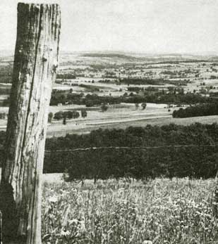
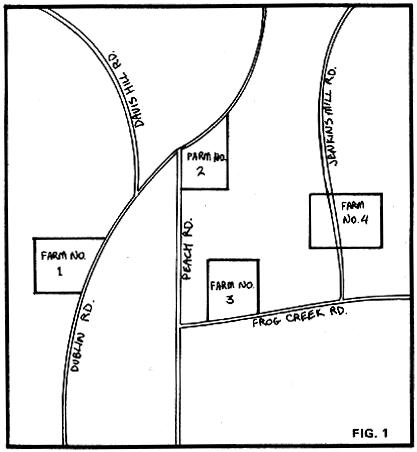
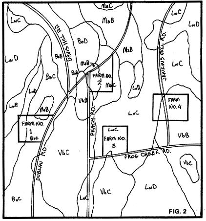

Land is land . . . or so it seems when you look out over the countryside. Often, though, subsistence or non-subsistence on a farm or rural commune depends on a factor you can't see at all: the quality of a tract's soils. There's a world of difference between gardens that yield good crops willingly, without fertilizers, and those that grow only poverty grass . . . between drainage fields that can absorb human wastes and those that send them bubbling back to the surface . . . between pleasant roads and driveways and those that turn to chunky peanut butter in the spring or after a heavy rain.
Drainage, acidity (which is closely related to fertility), soil texture and structure, stoniness, slope, presence of hardpan layers . . . all these characteristics can-and should-determine how man uses the land. Looking at a property reveals none of those important features. But then, it doesn't have to.
Prospective buyers of acreage in rural areas are sometimes pleasantly startled to discover that easily accessible soils information exists for almost every piece of farmable property in the U.S. For over 70 years the U.S. Soil Conservation Service (SCS) has been measuring and mapping such data, tract by tract, throughout the country. By the end of 1972, 43 percent of the U.S. had been covered . . . with most of the uncharted area being federal forest and western rangelands.
Much of the information thus gathered has been published in the form of county soil surveys. Each directory in this series contains maps showing what soils are found on all the land in a given county, and descriptions of every type's unique characteristics. If such a guide is available for the area that interests you, it can be obtained free from the local office of the Soil Conservation Service (look under "U.S. Government" in the telephone directory).
Let's take a hypothetical example to show how the survey can help you size up rural property. Suppose you're looking for a place of your own-with a woodlot and maybe a pond-where you can do some subsistence farming: keep a few animals, plant a garden, raise enough crops for livestock feed and home use. You're driving around Tompkins County, New York (you like the area) . . . and you have with you a copy of the Tompkins County Soil Survey.
The survey's general soils map tells you that the best agricultural lands are found in the northern part of the county. These tracts are expensive, however, since they're already in intensive use by large, highly mechanized operations. So you're looking at some of the poorer properties (they're cheaper, and you don't intend to run a large modern farm anyhow). Still, there's "poor" acreage and worse acreage . . . and you do want to be able to grow some crops.
You're particularly interested in four farms (see Fig. 1). Each is for sale at a price you can afford, and each has some feature that especially appeals to you . . . an old orchard, or the style of the farmhouse, or a stream running through the property. But what about the soils?
Fig. 2 shows the same farms with the soils units drawn in and labeled as they would be on the detailed maps in the survey. You'll see, for example, that Farm No. 4 has a lot of acreage marked VbB. The first two letters are a code for the soil type's name . . . in this case, Volusia. The third letter-which can range from A to F-refers to the class of slopes found in the mapping unit. Those marked "B" on Farm No. 4 are gentle inclines of 2 to 5 percent. (The code system formerly used on soils maps varied among counties, but is now in the process of being made uniform throughout the U.S. -MOTHER.)
Now, using the soil survey and the map in Fig. 2, you can evaluate the soils on the four farms. Those of Property No. 1 are predominantly Bath (Ba) . . . and, says the survey, very strongly acid, which means that fertility would be low unless you limed the tract. Since the slopes are marked "C", you know that plowing them will be tricky and you'll have to protect against erosion.
On the other hand, Bath soils are well drained. You can plow them early in the season, and underground water on a tract of Bath soils is readily available to crops grown in the permeable earth. This feature also means at least moderate suitability for septic tank systems. Most of the dirt road running by the property is on ground of the same type . . . and again, the good drainage should be appreciated in the spring.
Some Lordstown (Ln) soils are also found on the tract, but-since these are on D and E slopes-they're too steep for tilling and should remain in forest.
Farm No. 2 has predominantly Mardin (Ma) soils. . . not quite as acid as the Bath type, and therefore a little more fertile. Also, since about half the land is on B slopes, plowing on this property would be somewhat easier and erosion less of a problem.
Mardin soils, however, are only moderately well drained and are underlain by a fragipan . . . a hardpan layer close to the surface that impedes downward drainage as effectively as bedrock. Spring plowing would therefore be delayed, and septic tanks-even with large filter fields-would sometimes not function properly. The road (also on Mardin soils) would most likely be gooey in the spring or during wet weather.
Lordstown (Ln) soils predominate on Farm No. 3. Like those of the Bath type, they are strongly acid . . . good for blueberries and perhaps hay, but giving poor yields of row crops.
Lordstown soils are well drained and have no fragipan, but generally form in only thin layers over bedrock. This impedes downward drainage and makes for stony fields. Spring plowing would again be delayed, and some crops that require the development of deep root systems could be difficult to grow. The closeness of the surface to bedrock also means that your sewage effluent wouldn't percolate down very far and could contaminate ponds, springs, and wells.
The soils of Farm No. 4 are mainly Volusia (Vb). These are only slightly less acid than the Bath and Lordstown types and would still require a lot of lime to produce decent crop yields.
The slopes on this farm are marked as B . . . not bad. But wait a minute! Volusia soils, says the survey, are filled with stones-some large-and if you wanted to work the land with old-fashioned equipment, you'd have to be prepared for trouble.
Even more serious than stoniness, however, is the bad drainage. Volusia soils have a strong fragipan . . . which means that you wouldn't be able to plow until late in the season because of waterlogged earth (and also that roads and driveways would likely turn soft in wet weather). During dry periods, the roots of plants will be unable to penetrate the fragipan to get water . . . so drought can also be a problem.
Well, then, which farm do you choose? The soils on all four properties have some limitations. The Volusia and Lordstown types on Nos. 3 and 4, however, are clearly poorer than the Baths and Mardins on the other two tracts. Between these two, my choice would be No. 1. Although the Mardin soils of No. 2 are more fertile and on gentler slopes, the good drainage of the Bath soils can simplify many aspects of rural life: plowing, septic systems, and road maintenance. Their acidity is high but can be corrected by liming, which is much cheaper than tile-draining poorly drained land.
I hope I've convinced you by this time that a soil survey can give you a great deal of valuable information about an area or specific property you're considering (or about a place you already own). But what if the particular handbook you need is still unfinished? It's true that surveys have not yet been published for some counties (such studies often take 20 years and cost over a million dollars to complete). Nevertheless, the data are on file in the local SCS offices and elsewhere, and are available to the public.
If your county's survey is not yet in print, the Soil Conservation Service officials will show you the unpublished maps and aerial photos and will help you interpret them. And if the area you're interested in hasn't even been mapped in recent years, the same experts can direct you to old charts containing information which is usually still useful. (The essentials certainly haven't changed significantly in the last 50 years. . . and there's hardly a county in the U.S. for which no soils data exist.)
An SCS representative, however, can do more than merely distribute maps and printed material: He can-and will-talk to you. A soils scientist once told me that specialists in his field so rarely encounter a person who is aware of soil differences that they'll "talk the arm off" anyone who does show an interest . . . and in my experience this is true.
Soil conservationists have had extensive field experience and innumerable contacts with farmers and other rural landowners in their areas. Accordingly, they can provide unique insights into what you can do with the land and where you might attempt to do it. Very often, in fact, they'll be familiar with a specific property that interests you.
Another good man to speak to is your county agent (who can be located by looking in the telephone directory under County Offices, Cooperative Extension Association). These officials also distribute soil surveys, and most of them are intimately familiar with the limits which the various local soil types impose on farming and rural living. If conventional agriculture is ailing or dead in the area you're investigating, the county agent can tell you why . . . and he can probably advise you whether or not the same reasons would likely defeat your own plans for the land.
Another source of soils information is the county planning board. This body gets its data from the SCS, and-if your contacts with the soil conservationist and the county agent were fruitful-you won't have to make the additional visit... not for the same purpose anyway.
You may, however, want to call on the county planning board for various other information . . . on sewage and water facilities, the location of school districts, building and health regulations, taxes, and areas where future development is likely to occur. That last point can be important. When you choose your rural loophole out of modern living, you want to be sure it's not in the path of some superhighway the planning board has slated to be built five years or so later.
In closing, I suppose I should admit that I myself didn't practice what I now preach. When my wife and I bought our rural propert-yan old farmhouse with six acres-I knew nothing about the soils on the tract. We took the place because we liked the house and the isolation and the fruit trees. We had no intention of doing any farming . . . and that was just as well, since I know now that the land is unsuitable for the growing of all but a few specialized crops.
We have some friends who are attempting a commune nearby, and they also are largely prevented from farming by the soils on their property. Both they and we live on roads that drastically shorten the lifespan of the cars that try to plow through the goo each spring. About all my septic system is good for is to fertilize the raspberry bushes that grow near it. (I haven't asked the commune folks how well their outhouses work.)
The fact is that we each have our own idea of what we want from the land and what we think we'll be able to do for the earth in return. If I had it to do over, I'd still purchase the place I live on: The old house and the isolation and the fruit trees compensate for the road and the septic system. My friends on the commune would still buy their tract because the seclusion is adequate trade-off for the limitations they have to cope with. But then, neither we nor they are trying to make a living from the land. If we were, the shortcomings of the soils on our acreage would suddenly become harsh and immediate realities. For persons who are trying to approach self-sufficiency, to ignore soils differences in choosing rural property is to court disaster.
|
|
 |
 |
|
 |
|
|